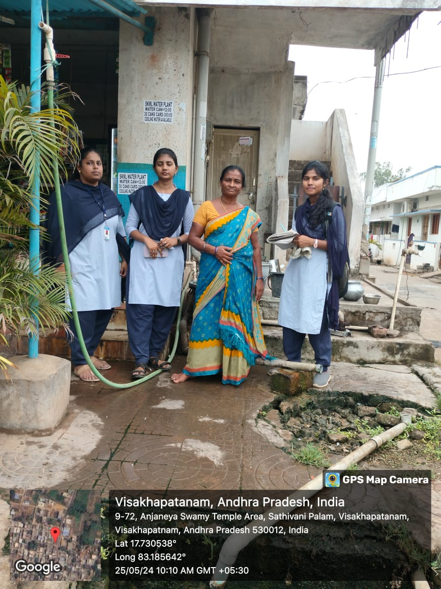
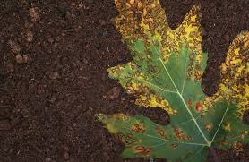
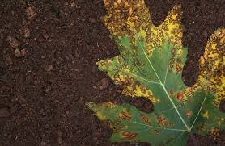

OUR MISSION
Agriculture faces significant challenges from
soil degradation and insect infestations, which
threaten crop yields, farmer incomes, and food
security. Traditional methods of addressing these
issues are often reactive, time-consuming, and
require specialized knowledge that many farmers
lack. There is a need for an accessible, efficient,
and comprehensive solution that empowers farmers
with real-time, data-driveninsights and recommenda
-tions to effectively manage soil health and control
insect populations.
Solutions

 
Soil solutions insect solutions Defiecency solutions

Soil solutions insect solutions Defiecency solutions